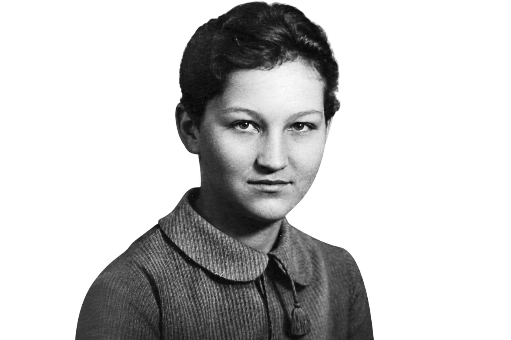

Зоя Космодемьянская: «Нас 200 миллионов...»
Быть героем в 18 лет. Зоя Космодемьянская стала первой женщиной, удостоенной звания Героя Советского Союза посмертно в годы Великой Отечественной войны. Вчерашняя школьница из Москвы, мечтавшая о литературном институте, в октябре 1941 года добровольно вступила в ряды защитников Родины.

Подвиг в Петрищево
В конце ноября 1941 года Зое, действовавшей под позывным «Таня», было поручено выполнить задание в тылу противника. Она была схвачена после одной из попыток выполнить поставленную задачу.
Несмотря на тяжёлые испытания и давление, Зоя не выдала товарищей и продолжала сохранять стойкость.
«Вы меня сейчас повесите, но я не одинока. Нас двести миллионов».
Последние часы
История Зои стала одним из наиболее известных символов сопротивления. Перед казнью она обращалась к жителям Петрищево и призывала их не бояться врага и продолжать сопротивление. Её мужество стало известно всей стране и навсегда осталось частью исторической памяти.